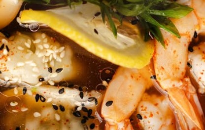
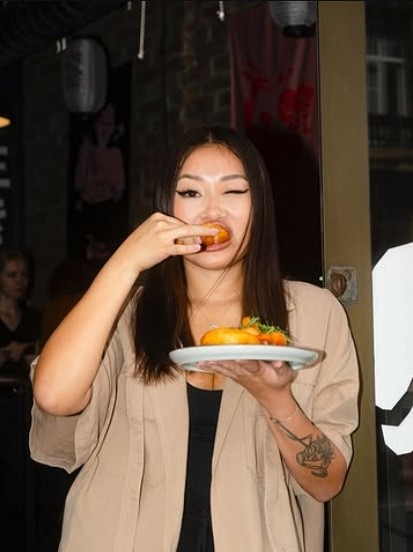

Острый с морепродуктами
остроКреветки, кальмар, лимон, кунжут и шпинат в пряном бульоне.

Честный рамен в Старом Граде. Каждый день с 12:00 до 23:00.
Бульон томится часами, пока город спит.
Лапша, маринованные яйца, свежая зелень.
Открываем двери. Первые миски — горячие с плиты.
Последняя миска за день. Завтра — всё заново.

Honest story,
authentic taste.
Мы не делаем рамен быстрым. Мы делаем его настоящим — так, как его едят в Японии.